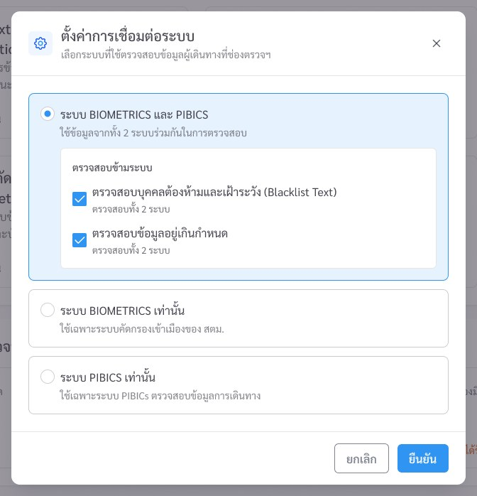
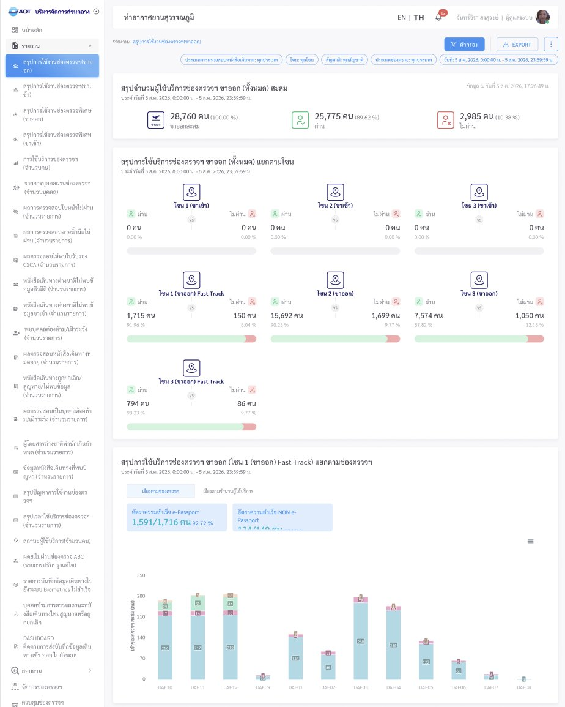
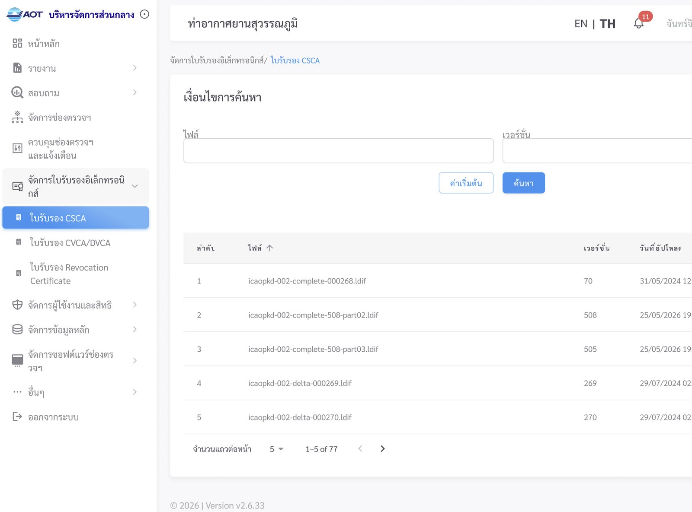
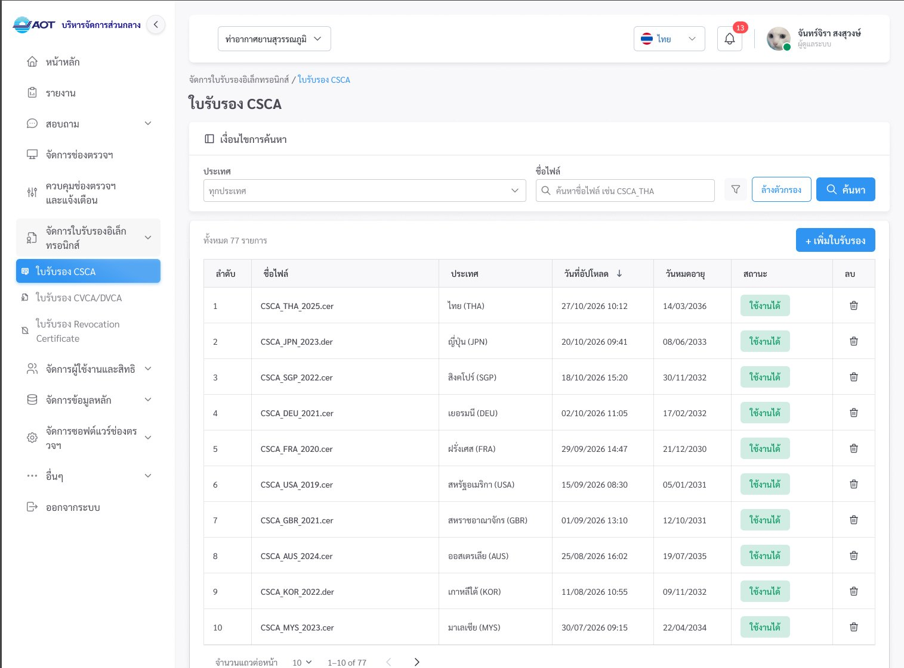

11automated gates across 3 zones
6external systems each gate depends on
3role groups with different jobs
Redesign of the back-office tool Suvarnabhumi Airport staff use to monitor and control automated passport gates.

I mapped who acts on a gate and who only watches it. Each screen in the new sitemap is tied to a role and a user story, which showed which pages nobody needed and which actions needed a review step.
Immigration master-data unit. Picks a faulty gate from the dashboard, checks its detail, and brings it back into service.
Unit heads, operations staff, system admins. Watch the whole airport, open an incident, act, and confirm the result.
Central immigration. See gate and system status and alerts, and hand problems to the right team in time.


Opening a gate lets a passenger through without a full check. Changing which systems are used changes every check at the airport. Both now stop for a moment.


Two modules that had grown by addition: 24 report links stacked in the sidebar, and certificate files listed by file name.




Shared accounts get locked and suspended in real use. Each state has its own message and next step.